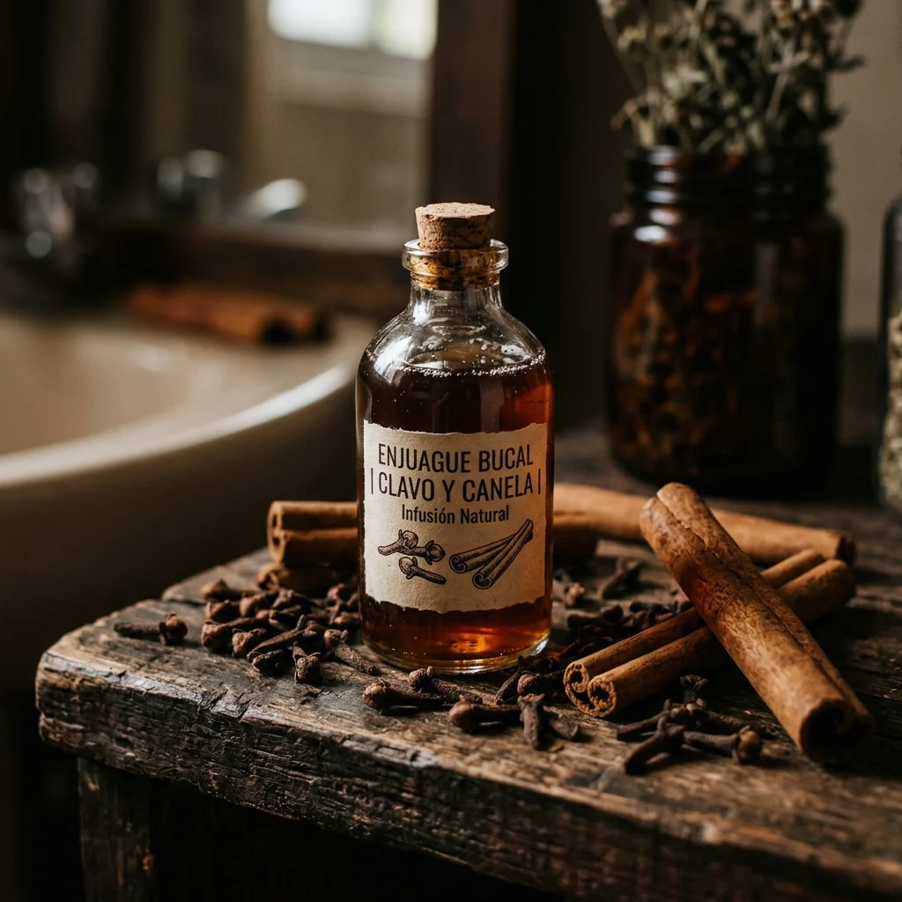

Carregando sabedoria ancestral...
Artículos Recomendados
 Higiene
38K
Higiene
38K
Desodorante natural de bicarbonato de sódio e óleo de coco
Proteja as axilas e elimine as bactérias com um desodorante suave, sem sais de alumínio, à base de óleo de coco orgânico e amido de araruta.

Higiene 31KEnxaguante bucal anti-séptico com cravo e canela
Enxaguante bucal purificante à base de decocção concentrada de cravo e canela. Hálito fresco, gengivas saudáveis e proteção antibacteriana.
 Higiene
29K
Higiene
29K
Pasta de dente mineral de argila branca em pó
Mistura seca e alcalina de caulino e sais marinhos para a higiene oral diária. Limpeza mecânica pouco abrasiva sem necessidade de conservantes líquidos.
Comentarios y Experiencias